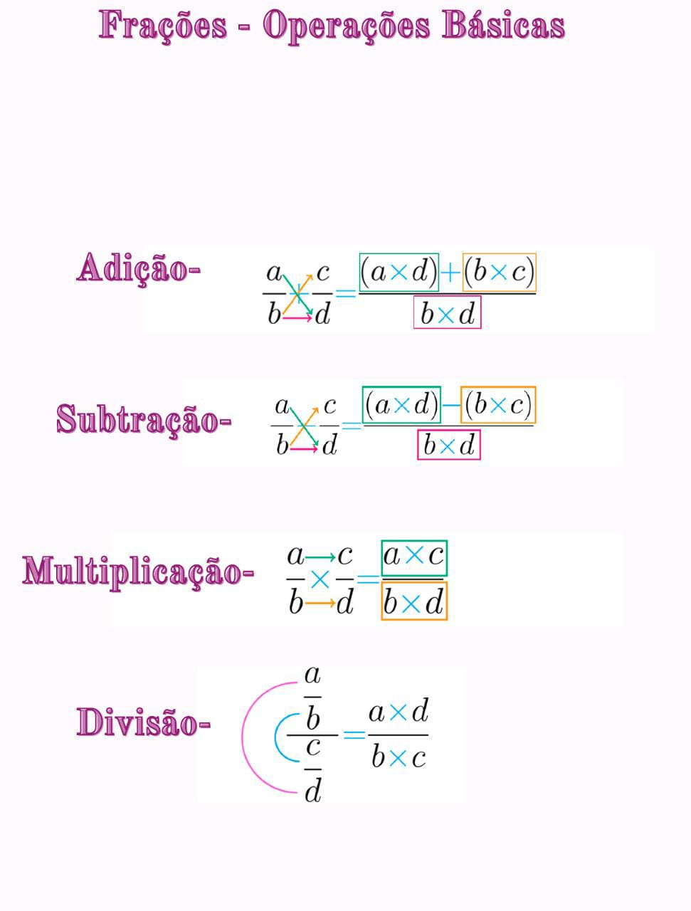
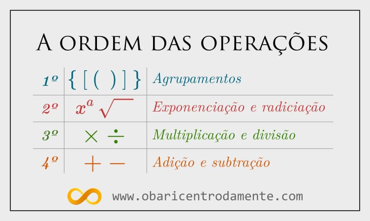
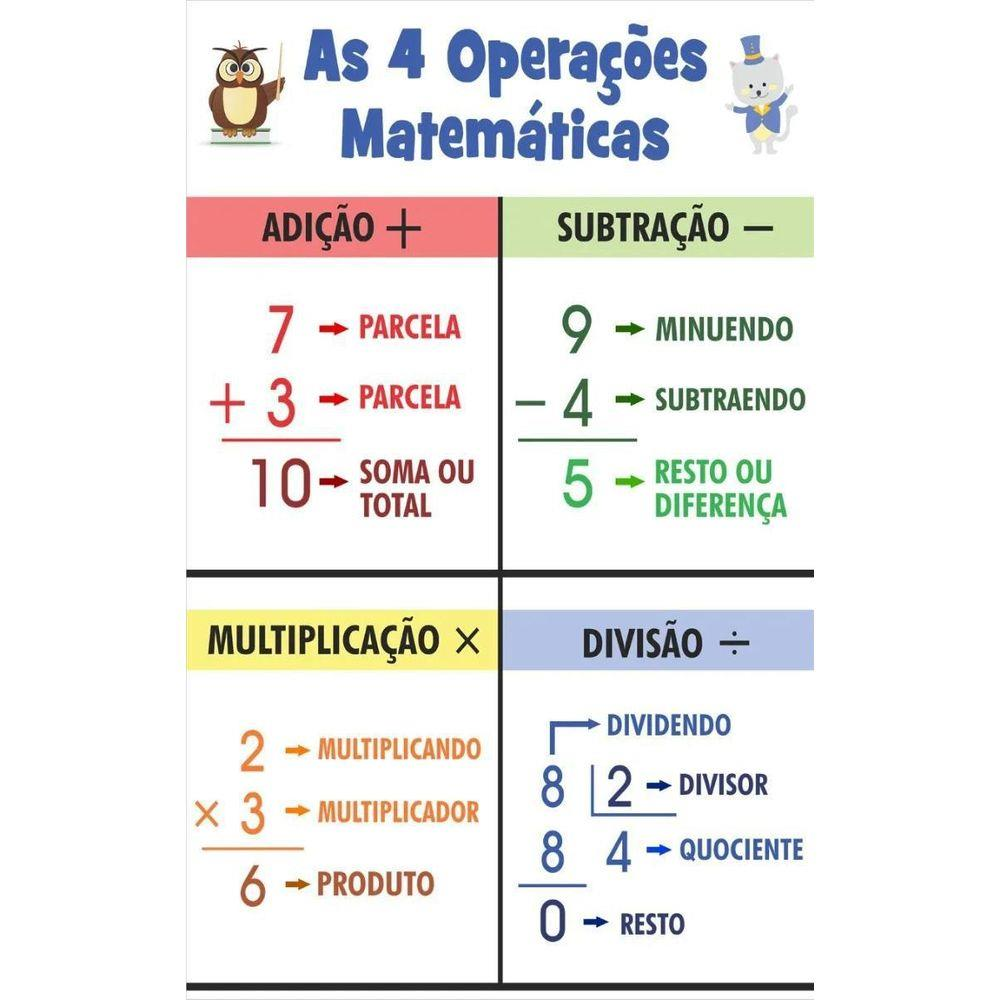

O que é operaçoes?
As operações matemáticas são procedimentos ou ações que são realizadas em números para obter um resultado específico. Elas são a base fundamental da aritmética e são essenciais em todas as áreas da matemática e em muitos campos da ciência, tecnologia, engenharia e negócios.
Quais são as operações matemáticas básicas?
As operações matemáticas básicas são adição, subtração, multiplicação e divisão. Cabe destacar duas relações entre essas operações:
- A subtração é a operação inversa da adição.
- A divisão é a operação inversa da multiplicação.
Adição
A adição é uma operação que combina dois ou mais números para obter uma soma. O símbolo utilizado para a adição é o "+" (mais). Por exemplo, a adição de 2 + 3 resulta em 5.Subtração
A subtração é uma operação que retira um número de outro número para obter uma diferença. O símbolo utilizado para a subtração é o "-" (menos). Por exemplo, a subtração de 5 - 2 resulta em 3.
Multiplicação
A multiplicação é uma operação que combina dois ou mais números para obter um produto. O símbolo utilizado para a multiplicação é o "x" (vezes) ou o símbolo de ponto ".". Por exemplo, a multiplicação de 2 x 3 resulta em 6.
Divisão
A divisão é uma operação que divide um número por outro número para obter um quociente. O símbolo utilizado para a divisão é o "÷" (dividido por) ou uma barra horizontal "/". Por exemplo, a divisão de 6 ÷ 2 resulta em 3.
Além dessas operações básicas, existem outras operações matemáticas importantes, como:
- Potenciação:
- Radiciação:
- Logaritmo:
A potenciação é uma operação que envolve o uso de expoentes para indicar quantas vezes um número deve ser multiplicado por si mesmo. O símbolo utilizado para a potenciação é o "^" ou, em algumas notações, "**". Por exemplo, 2 elevado à 3ª potência (2³) resulta em 2 x 2 x 2 = 8.
A radiciação é a operação inversa da potenciação. Ela envolve a extração da raiz de um número. O símbolo utilizado para a radiciação é o símbolo de raiz quadrada "√". Por exemplo, a raiz quadrada de 9 (√9) é 3, pois 3 x 3 = 9.
O logaritmo é uma operação matemática que expressa a potência a que um número específico (a base) deve ser elevado para produzir um determinado número. O símbolo utilizado para o logaritmo é "log". Por exemplo, logaritmo de base 10 de 100 (log₁₀ 100) é igual a 2, pois 10² = 100.
Aqui estao alguns operações matemáticas relacionadas:
- Frações
- Porcentagem
- Equações
- expressões algébricas
- propriedades matemáticas
- matrizes
As frações representam partes de um todo e são usadas para expressar números que não são inteiros. Uma fração consiste em dois números separados por uma barra de fração. O número superior é chamado de numerador e o número inferior é chamado de denominador. Por exemplo, 1/2 representa uma metade, onde o numerador é 1 e o denominador é 2.
A porcentagem é uma forma de expressar uma fração de 100. É amplamente utilizada para representar partes de um todo ou para expressar mudanças em valores relativos. Por exemplo, 25% é igual a 25/100 ou 0,25. Para calcular uma porcentagem de um número, você pode multiplicar o número pela fração decimal equivalente à porcentagem desejada.
Uma equação é uma expressão matemática que contém um sinal de igual (=) e indica que duas expressões são equivalentes. As equações podem envolver diferentes operações matemáticas, e o objetivo é encontrar o valor desconhecido que torna a igualdade verdadeira. Por exemplo, na equação 2x + 3 = 9, o objetivo é encontrar o valor de x que satisfaça a igualdade.
As expressões algébricas são combinações de números, variáveis e operações matemáticas. Elas podem incluir constantes, como 2 ou 5, variáveis, como x ou y, e operações, como adição, subtração, multiplicação e divisão. Por exemplo, a expressão 3x² + 2y - 5 representa uma combinação de termos algébricos.
As propriedades matemáticas são regras que podem ser aplicadas para simplificar expressões e resolver equações. Algumas das propriedades mais comuns incluem a propriedade comutativa (a ordem das operações não altera o resultado), a propriedade associativa (a forma como os números são agrupados não altera o resultado) e a propriedade distributiva (a multiplicação distribui-se sobre a adição ou subtração).
As matrizes são tabelas retangulares de números ou elementos. Elas são usadas em várias áreas da matemática e da ciência, como álgebra linear e computação gráfica. As operações matriciais incluem adição de matrizes, multiplicação de matrizes e determinante de matrizes.


